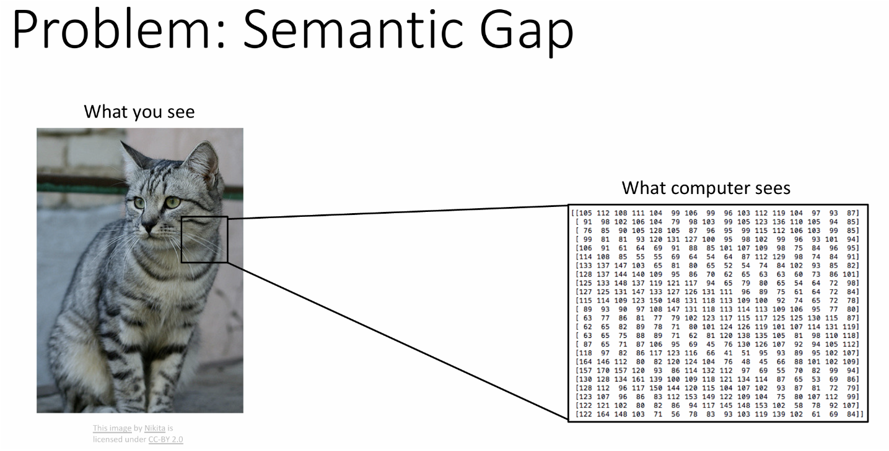
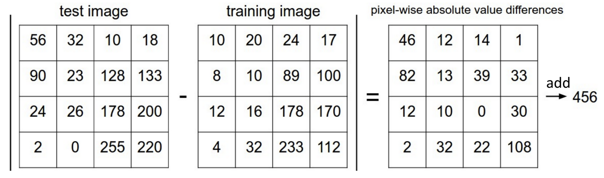
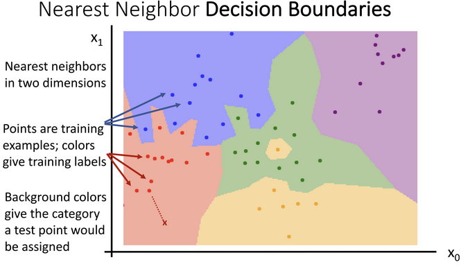
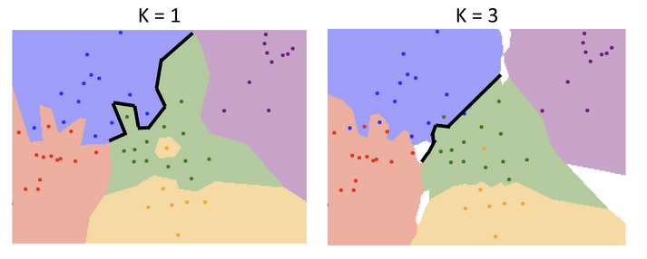
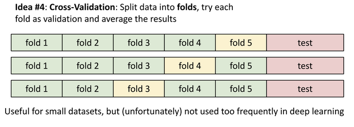

Lec 2: Image Classification
Sementic Gap
电脑看图像只是一个巨大的数字表格 , 对图像的简单更改都可能会改变整个表格 , 这是一个语义鸿沟 (semantic gap)

图像分类有多个挑战 : 视角变化 (viewpoint variation) / 类内变化 (intraclass variation) / 细粒度分类 (fine-grained classification) / 背景干扰 (background clutter) / 光照变化 (illumination changes) / 变形 (deformation) / 遮挡 (occlusion) / etc.
机器学习 : 数据驱动的方法 收集数据 -> 训练分类器 -> 应用, 大体是下面这样的:
def train(images, labels):
# Machine learning!
return model
def predict(model, test_images):
# Use model to predict labels
return test_labels
常见的图像分类数据集
- MNIST: 手写数字识别数据集
- CIFAR-10: 10 类小图像数据集
- CIFAR-100: 100 类小图像数据集
- ImageNet: 大规模图像分类数据集，包含超过 1400 万张图像和 1000 个类别
Nearest Neighbor Classifier
最简单的分类器是最近邻分类器 (Nearest Neighbor Classifier)，它通过计算测试样本与训练样本之间的距离来进行分类。
对于每个测试样本，找到距离最近的训练样本，并将其标签作为预测标签。
例如使用曼哈顿距离 (\(L_1\)) 来作为距离度量 (distance metric):

import numpy as np
class NearestNeighbor:
def __init__(self):
pass
def train(self, X, y):
""" X is N * D where each row is an example. Y is 1-dimension of size N """
# the nearest neighbor classifier simply remembers all the training data
self.Xtr = X
self.ytr = y
def predict(self, X):
""" X is N * D where each row is an example we wish to predict label for """
num_test = X.shape[0]
# lets make sure that the output type matches the input type
Ypred = np.zeros(num_test, dtype=self.ytr.dtype)
# loop over all test rows
for i in xrange(num_test):
# find the nearest training image to the 1'th test image
# using the L1 distance (sum of absolute value differences)
distances = np.sum(np.abs(self.Xtr - X[i, :]), axis = 1)
min_index = np.argmin(distances) # get the index with smallest distance
Ypred[i] = self.ytr[min_index] # predict the label of the nearest example
return Ypred
X[i, :] vs X[i]
X[i, :]是二维数组的第 i 行，表示一个样本的所有特征。X[i]在 NumPy 中等价于X[i, :]，表示同一行。
在习惯上，通常采用 X[i, :] 的写法，能够具有更强的清晰度和可读性，让不太熟悉 NumPy 的人也能更容易理解这是在操作行和列。
并且当处理更高维的数组（比如三维的图像数据 ( 高 , 宽 , 通道 )）时，你就必须使用更明确的索引，例如 image[:, :, 0] 来获取整个 R 通道。在二维代码中也坚持使用 X[i, :] 可以保持一种统一和规范的编码风格。
K-Nearest Neighbor Classifier
显然，最近邻分类器在解决实际问题时往往过于简单了。K- 最近邻分类器（K-Nearest Neighbor Classifier）通过考虑多个最近邻样本来进行更稳健的分类。具体来说，对于每个测试样本，KNN 会找到 K 个距离最近的训练样本，并根据这 K 个样本的标签进行投票，最终确定测试样本的预测标签。
KNN 的基本步骤如下：
- 计算测试样本与所有训练样本之间的距离。
- 找到距离最近的 K 个训练样本。
- 根据这 K 个样本的标签进行投票，确定测试样本的预测标签。
KNN 的优点是简单易懂，且在小规模数据集上效果良好。然而，它的缺点也很明显：计算量大，尤其是在数据量较大时，预测速度较慢。
class KNearestNeighbor:
def __init__(self, k=3):
self.k = k
def train(self, X, y):
self.Xtr = X
self.ytr = y
def predict(self, X):
num_test = X.shape[0]
Ypred = np.zeros(num_test, dtype=self.ytr.dtype)
for i in range(num_test):
distances = np.sum(np.abs(self.Xtr - X[i, :]), axis=1)
min_indices = np.argsort(distances)[:self.k]
closest_labels = self.ytr[min_indices]
Ypred[i] = np.bincount(closest_labels).argmax()
return Ypred
np.bincount
np.bincount 是一个 NumPy 函数，用于统计数组中每个非负整数的出现次数。它返回一个数组，其中索引表示整数值，值表示该整数在输入数组中出现的次数。
For example, if closest_labels is [1, 7, 1, 1, 2], np.bincount will return an array like [0, 3, 1, 0, 0, 0, 0, 1] (0 zeros, 3 ones, 1 two, etc.).
在 KNN 中，我们使用 np.bincount(closest_labels).argmax() 来找到出现次数最多的标签，这样可以确定 K 个最近邻样本中最常见的标签作为预测结果。
Decision Boundaries
决策边界（Decision Boundaries）是指在特征空间中将不同类别分开的边界。对于 KNN 分类器，决策边界是由训练样本的位置和标签决定的。KNN 的决策边界通常是非线性的，因为它是由多个最近邻样本的标签投票结果形成的。

从决策边界可以看出，最近邻分类器很容易受离群值影响
当 K 较小时，决策边界可能会非常复杂，容易过拟合；当 K 较大时，决策边界可能会变得平滑，但可能会欠拟合。

Hyperparameters
超参数（Hyperparameters）是指在模型训练之前需要设置的参数，这些参数通常会影响模型的性能。对于 KNN 分类器，超参数包括：
- K：最近邻的数量，决定了分类器的复杂度。
- 距离度量：用于计算样本之间距离的方式（如欧氏距离、曼哈顿距离等
） 。 - 权重：是否对最近邻样本的标签进行加权（如距离越近的样本权重越大
） 。
通常我们将数据分为三部分：训练集、验证集、测试集；我们用验证集来调优超参数，最终在测试集上评估模型性能。
训练集、验证集、测试集
- 训练集：用于训练模型，模型在此数据上学习特征和标签之间的关系。
- 验证集：用于调优超参数和选择最佳模型，帮助避免过拟合。
- 测试集：用于评估最终模型的性能，确保模型在未见数据上的泛化能力。
三者的关系类似于教科书和课后作业、模拟考试、正式高考之间的关系。
使用单一的验证集（一次模拟考）有一个问题：模型在这次模拟考上表现好，可能只是运气（比如这套模拟题恰好是它擅长的类型

这种方法可以更全面地评估模型的性能，减少由于单次验证集划分带来的偶然性影响。
工作方式：
-
我们不再单独划分出验证集，而是将整个训练数据（不包括测试集
！ ）分成 K 份（比如 5 份） 。 -
进行 K 轮实验：
-
第 1 轮：用第 1 份做“模拟考”（验证集
） ，用剩下的 4 份做“教科书”（训练集） ，得到一个分数。 -
第 2 轮：用第 2 份做“模拟考”，用剩下的 4 份做“教科书”，得到一个分数。
-
...
-
第 5 轮：用第 5 份做“模拟考”，用剩下的 4 份做“教科书”，得到一个分数。
-
-
最后，将这 K 轮的“模拟考”分数取平均值，作为对当前“学习策略”（超参数）的最终评估。